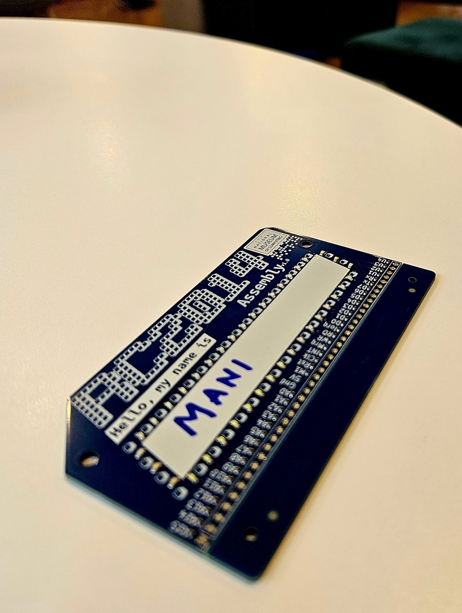
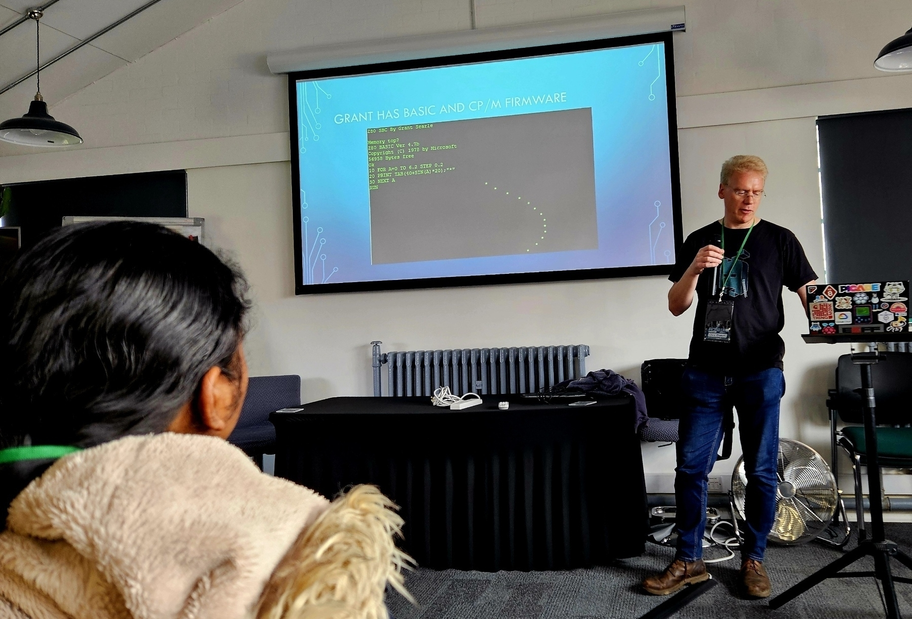
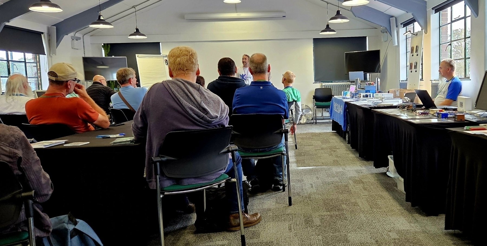
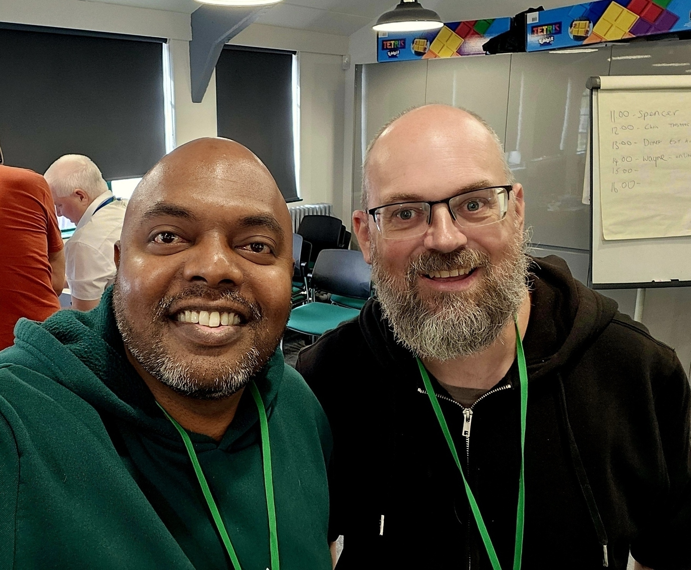
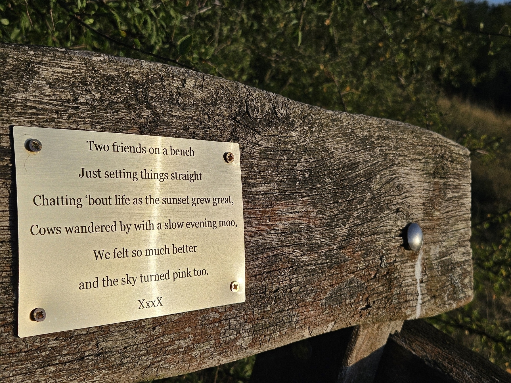

AI-102: More Than an Exam — A Map of AI Possibilities
I recently passed the Microsoft AI-102: Designing and Implementing an Azure AI Solution exam — though just by a whisker. It was one of those experiences that remind you how broad the AI landscape has become.
The toughest part wasn’t the theory. It was the sheer number of AI services you’re expected to know — what each one does, how they differ, and when to use them. Add to that a set of coding-style questions that test practical familiarity, and you realise: unless you’ve built and deployed solutions hands-on, the concepts alone won’t carry you through.
If you’re preparing for this exam, here’s what I found matters most:
Do the labs. Reading or watching videos won’t wire the knowledge into muscle memory. Spend time building solutions using Cognitive Services, Language Studio, Azure OpenAI, Custom Vision, and the rest.
Understand the why, not just the what. Every service exists to solve a slightly different problem — recognising when and why to use each is the key.
Expect real-world design questions. These scenarios force you to think like an architect, not a developer ticking boxes.
One side benefit — and perhaps the biggest value for senior engineers and tech leads — is that this exam serves as a catalogue of AI possibilities. You end up seeing the full spectrum of what can be built: from computer vision to conversational AI, from document intelligence to custom embeddings. It sparks new ideas for how to combine services into real solutions.
So yes, AI-102 is challenging. But if you treat it as an exploration, not an assessment, it becomes a creative journey — one that leaves you with both certification and inspiration.
From Data Solutions Architecture to Cybersecurity: A Journey of Continuity, Not Transition
My first foray into Application Security dates back to 2003, when I developed the Authentication and Authorization module for an ASP.NET 1.0 web application used by the State of Maine’s Center for Disease Control & Prevention for Breast and Cervical Health Screenings. That early responsibility—designing secure password storage mechanisms and implementing encryption—instilled in me the fundamental principles of security-by-design. It also gave me an enduring appreciation for the importance of protecting data at its very source.
In the years that followed, across the various public-facing websites I built and maintained, the OWASP Top 10 remained my trusted reference for web application security. Yet, it wasn’t until March 2019 that I became formally embedded within a Cyber Security division of a multinational enterprise. There, I gained a deeper appreciation of cybersecurity at scale—particularly in the context of securing global digital estates.
My team’s focus on Vulnerability Identification exposed me to one of the classic challenges in cybersecurity: asset discovery. Applying my Data Lake Strategy expertise, I helped create a security-tool-agnostic “Know Your Estate” solution, enabling visibility across thousands of assets. By leveraging “heartbeats” from multiple systems, we were able to establish a truthful and dynamic view of active hosts, forming the foundation for measuring coverage of intrusion detection systems such as CrowdStrike, Qualys, and Microsoft Defender.
A security consultant and close friend later told me that such innovation—bridging data architecture with security operations—was rare, as many enterprises focus mainly on compliance. That observation became a turning point, inspiring me to specialize further in cybersecurity while continuing to operate as a Cloud and Data Solution Architect.
To formalize this growing expertise, I pursued and earned a series of Microsoft certifications between 2020 and 2021, including:
- Microsoft Azure Architect Technologies
- Microsoft Azure Architect Design
- Microsoft Azure Security Technologies
From 2022 to 2024, while serving in senior leadership roles, my involvement deepened to encompass the implementation of security controls across the organisation. This extended beyond technical measures such as tenant-level IAM tightening to include process-level initiatives—for example, Cyber Awareness Training for Joiners and Movers and Attack Simulation exercises using Microsoft Defender.
My most comprehensive cybersecurity experience came during my tenure as Chief Technology Officer (CTO), where I led the organisation’s journey toward ISO/IEC 27001 certification. The one-year preparation involved drafting and operationalizing numerous security policies and procedures, embedding core security principles into every layer of the business. This culminated in the company achieving full ISO 27001 certification—a defining milestone that validated both our practices and my understanding of cybersecurity governance.
Having accumulated practical, leadership-level experience in implementing and governing cybersecurity programs, I felt it was time to formalize my expertise through professional certification. This led to my successful completion of the (ISC)² Certified in Cybersecurity (CC) certification—an important step in consolidating my knowledge and aligning it with globally recognized standards.
Whist I am continuing to architect, implement and deliver big-data scale data solutions for AppSec, my goal is to progress toward the CISSP certification, not as a career shift, but as a natural evolution of my ongoing journey—integrating data, cloud, and cybersecurity into a cohesive discipline aimed at securing information systems holistically.
A father’s past and a daughter’s imagination, sparked by 32K of memory

From Bangalore’s hand-etched circuits to RC2014 kits — a journey rewired
On the 20th of September 2025, my daughter and I spent a day at the National Museum of Computing (TNMOC) in Bletchley Park for the RC2014 assembly event. It was, without exaggeration, one of the most special visits I’ve ever made to the museum—and I’ve been there countless times.
A Place That Never Loses Its Charm
My first visit to Bletchley Park was back in 2008. Tickets were just a few pounds then, and I still remember seeing the Colossus machine rebuilt and working fine. Ever since, TNMOC has been inseparable from my visits to Bletchley Park—no trip ever felt complete without stepping into those rooms filled with the hum of history.
There’s a personal thread here too. My parents and sister once stood in the middle of the World War II experience at Bletchley, a powerful reminder of how computing and codebreaking shaped the course of history. Later, during my time at Elastacloud, I visited the museum many times—sometimes for executive meetings, sometimes simply out of that enduring geeky connection.
Back to My Roots in Electronics
But this visit was different. More personal. More nostalgic.
As a boy growing up in Bangalore, I attended an electronics course at the Visvesvaraya Industrial and Technological Museum. That’s where my fascination with circuits began, long before computers took over my imagination. I would cycle 15 km to a small workshops on Tank Bund Road and TCM Royan Road (running parallel to Majestic Railway Station Platforms and Depot) where they had a lathe machine to drill holes into copper boards, carefully etch circuits with marker pens, and dip the boards into acid to bring them to life.
Components like LEDs, diodes, and ICs were bought from another shop nearly 10 km away (Seppings Road, Shivajinagar).
At home, I somehow convinced my father to buy me a soldering iron and some flux. The first circuit I ever built was a doorbell that played Christmas carols. I still remember the thrill—it felt like I was on top of the world.
That passion carried me to my first ever science exhibition at Christ School, where I built a model train set with an automated railway crossing using photo diodes. It wasn’t just about the project—it gave me confidence, and yes, it even introduced me to my first crush!
So, when I sat with a soldering kit again at TNMOC, it wasn’t just about building an RC2014 computer—it was like rediscovering a part of myself.
A Shared Learning with My Daughter
What made it even more special was sharing the day with my daughter. Watching her see the fundamentals of computing for the first time—registers, RAM, and machine instructions—was priceless.
Steve, one of the guides, demonstrated how to load bits into registers, and I could see her mind racing. Just a week ago she was complaining about her i5 laptop with 16 GB RAM slowing down, and now she was marveling at what people managed to do with a mere 32K RAM. That kind of perspective shift is worth a thousand lectures.
I bought an RC2014 kit and a few extra modules, partly for myself and partly so we could build something together—assembly, BASIC, the works.
Serendipity and Old Friendships
And then, as if the day hadn’t already been special enough, I ran into an old colleague and friend. He had traveled all the way from the south coast of England—three hours just to attend the same event. The last time we’d met was in 2009.
We reminisced about the days when we used to head to the office daily, and he shared how he now enjoys working fully remote. I, in turn, shared the wild rollercoaster of my last eight years. Standing there among the exhibits, it felt like no time had passed at all.
Why This Visit Was Different
For me, this visit wasn’t just about computers or soldering irons. It was about bridging past and present:
- The boy in Bangalore, cycling miles for electronic parts.
- The father, sharing a spark of fascination with his daughter.
- The professional, reconnecting with an old friend after more than a decade.
The RC2014 event tied all these threads together—nostalgia, learning, and friendship—making it the most meaningful visit I’ve ever had to TNMOC.
Two friends on a bench
A lot of thinking happened on the daily walks to this place during Covid-19. Revisiting it on a quiet evening brings back similar thoughts and experiences.

Flirting with Stocks

Finished reading: Flirting with Stocks by Anil Lamba 📚
Two important take aways:
- To be a successful investor, you need to understand just two things:
- What to buy (depends on your ability to do fundamental analysis)
- When to buy and When to sell (depends on your ability to do technical analysis)
- Read the balance sheet of the company before investing in. Ensure the company is not violating fundamental rules of good finance management. (this is also useful to make career decisions either to join or leave the company)
The DOSE Effect

Finished reading: The DOSE Effect by Tj Power 📚
The four chemicals:
-
Dopamine - The MOTIVATIONAL chemical
-
Oxytocin - The CONNECTION chemical
-
Serotonin - The MOOD & ENERGY chemical
-
Endorphins - The DE-STRESSING chemical
Why India’s IT Talent Is Trapped: A Conversation That Got Me Thinking
Friend: “I can’t find the right people for my team. It’s a niche project—cutting-edge stuff. You’d think engineers would jump at this. But no one’s interested.”
Me: “That’s surprising. Especially in your company. It’s huge. What’s the problem?”
Friend (sighing): “Exactly that. The company. People associate us with routine, not innovation. Even when the project is exciting, the company brand turns them off.”
Me: “Isn’t that fixable? Can’t you directly reach out to candidates and explain the project?”
Friend: “I wish. All hiring is centralised. I’m stuck with standard Job Descriptions. By the time they reach candidates, it’s like Chinese whispers. The uniqueness of the project is lost.”
Me: “Sounds like a brand problem, not a project problem.”
Friend: “Exactly. And most good candidates are stuck in 3-month notice periods. Even if I find someone, there’s no guarantee they’ll join. They spend those months collecting offers and pick whoever bids highest in the last week.”
Me: “I’ve seen that. We faced the same when hiring in India. The 3-month notice period is a nightmare.”
Friend: “And guess what? Half the people on our internal bench aren’t right for the project either.”
Me: “But isn’t that what the bench is for? Deploying available talent?”
Friend: “In theory. But in reality, many are placed to protect ‘Revenue at Risk’ accounts. We’re hoarding people in roles just to avoid penalties or losing clients. It’s not about matching skills to projects anymore.”
Me: “So even when the bench looks full, you still have to hire contractors?”
Friend: “Exactly. Contractors come in as a stop-gap, but management wants them gone as soon as knowledge transfer is done.”
Me: “That’s a broken system. These long notice periods breed disengagement. Your situation’s a real-world example.”
Friend: “Right. And people think working in a big consulting firm is prestigious. But inside, it’s chaos.”
Me: “So, what do you think should change?”
Friend:
- “To Employers: End rigid notice periods. Retain people with purpose, not policies.”
- “To Employees: Don’t fall for brand names. Choose growth over logos.”
- “To Policymakers: Reform labor laws to discourage long notice periods and encourage healthy job mobility.”
Me: “You know what? This conversation deserves to be written up. It’s not just your problem. It’s the entire industry’s problem.”
Friend (laughing): “You do that. Maybe someone will finally listen.”
“India’s future talent hubs will be small, purpose-driven firms. Pride comes from impact, not brand.”
How I Avoided Being a Bad Exec by Respecting the Maker’s Schedule
One article I keep going back to — and often ask my teams to read — is Paul Graham’s “Maker’s Schedule, Manager’s Schedule.” It’s not just a great read; it’s a lens through which I view how to build and work within teams.
Whenever I form a new team for a project, I start by requesting everyone to read this article. It’s more than an ice-breaker — it sparks conversations that define how we work together. Even when I’m not leading the team, I’ve often asked my pair programmer to read it, just so we’re aligned in our daily rhythms.
The essence of the article?
Makers need long, uninterrupted blocks of time to get meaningful work done. Managers work in meetings and context switching. Trying to do both simultaneously compromises both roles.
Walking the Talk
Over the years, I’ve made a conscious effort to never mix the two. I won’t write code while pinging colleagues for updates I need for an executive meeting. That’s not multitasking. That’s inviting mediocrity into both outputs.
Sadly, many “tech-savvy” executives still blend these modes, jumping from meetings into code reviews and back again — often without realizing the toll it takes on thinking quality. Their decisions become reactive, their work rushed. And yet, this behavior is normalized largely because of their ill perceived superiority.
Maker Mode on Weekends
There have been times when I’ve deliberately carved out weekend hours for Maker work — not because I lack time during the week, but because I respect the type of mental space it requires.
One such example was building a RAG-based GenAI Q&A web app over a weekend. The aim was to demonstrate the “Art of Possible” to business stakeholders.
Had I attempted this during a regular workday, I would not have done injustice to both my job and the project. Even blocking an entire day during workday and declaring a Do Not Disturb day would not work because most of the day job was firefighting and being available to guide a portfolio of projects towards revenue generation.
Maker Hours in Remote Work
Remote work makes this separation even harder. Teams pings and meetings creep into focus time. But just yesterday, I had a rare in-person setup — sitting across from the PM. Headphones on. No meetings. Full flow.
It worked because the PM respected it. And when he did have something important, I appreciated his instinct to pause, observe, and only then approach. I explained that I was in Maker Mode — not out of arrogance, but because, as any Computer Science grad knows, context switching is expensive, for computers and for humans.
Credit to a Good PM
In my current project, I’m fortunate to work with a PM who gets this. He’s been a developer before — and it shows.
-
He ensures mornings are left for deep work.
-
He gathers what he needs in the afternoons, when energy is better suited to communication.
-
He actively cancels unnecessary meetings.
-
He strives to have no more than one sprint ritual per day.
-
He behaves less like a boss, and more like a facilitator — a quality that’s increasingly rare.
The more we acknowledge and protect these two modes of working, the more high-quality thinking and execution we can produce. As leaders, colleagues, and collaborators, we must stop glamorizing busyness and start designing time intentionally.
Because context switching isn’t a skill. It’s a cost.
This Microbit Didn’t Spark a Tech Career — It Prevented One
A few weeks ago, my friend from USA reached out to me with a dilemma. He wanted to support a young man’s further education — someone from a small town in South India — but there was a twist. This young person had a Bachelor’s degree in Commerce but was now insistent that his future lay in IT.
My friend was unconvinced. And honestly, I was equally puzzled.
We decided to speak with the young man over a video call to understand what drove this sudden pivot. The call didn’t offer much clarity. All we got was a strong sense of his “passion” for IT — but not much depth on why he felt this way. There was no clear articulation of what aspect of IT excited him, no tangible examples, and no signs of experience or experimentation.
Luckily, a few days later, my friend got the opportunity to meet him in person in Bangalore. When I also happened to be in Bangalore the following week, we compared notes. My friend’s impression hadn’t changed much — he still felt the young man was directionless and was wasting his solid foundation in commerce. He urged him to consider an MBA instead of an MCA (Master’s in Computer Applications).
We were stuck — at a decision point, and the application deadlines for both courses were fast approaching.
That’s when we decided to test the hypothesis.
A Concierge MVP with a Microbit
I was in a quiet café in Thanjavur — not far from the young man’s hometown of Kumbakonam — when I had an idea. I pulled out my laptop and showed Microbit MakeCode website to him.
For the uninitiated, the Microbit is a tiny, inexpensive microcontroller designed to introduce people to coding, electronics, and problem-solving. It’s tactile. It’s visual. It’s immediate.
His eyes lit up.
He quickly got the hang of the basics. Wrote his first program. Made an LED light blink. A sense of delight spread across his face. It was exactly the kind of spark I was hoping to see.
I left the café hopeful — maybe he was onto something.
Reality Bites
But as the days progressed and we introduced slightly more complex tasks — involving logic, algorithms, and mathematical reasoning — he began to falter.
He struggled to break down problems. He got frustrated. He waited for step-by-step instructions. He hit a wall where original thinking was required.
It became clear that his perception of an “IT career” was shaped more by what he saw around him — the lifestyle, the salaries, the glamour — and not by any true understanding of what the work actually involved.
In the span of a week, after some difficult introspection and honest feedback, he admitted it: his hypothesis was wrong.
Pivoting with Confidence
To his credit, he didn’t let the revelation break his spirit. Instead, he began to refocus — choosing to build upon his actual foundation in commerce and business. He is now actively exploring a career in business administration, aligned with his strengths and more grounded in reality.
Why This Matters
This short experiment reminded me of one of the key principles from The Lean Startup by Eric Ries — the Concierge MVP. In a concierge MVP, you test a hypothesis by manually offering a “real” experience to a small group of users. You don’t build the full product. You don’t scale. You just learn.
We used Microbit as our concierge MVP.
It cost almost nothing. It took one week. And it saved years of potential misalignment.
A Lesson for Mentors, Parents, and Career Guides
If you’re ever in a position to guide someone unsure about their career path — especially when they are swayed by trends rather than tested interests — give them a safe, low-stakes environment to experiment.
Let them get their hands dirty. Let them feel the joy and the struggle. Let them test their hypothesis.
And most importantly, let them fail fast — so they can succeed in the right direction.
What a Barista Who Couldn’t Speak Taught Me About Leadership
I’ve been coming to the same Starbucks in Kalyan Nagar, Bangalore, since the day it opened about three years ago. While many think of coffee shops as noisy or distracting, this space has been my sanctuary for focused work and original thinking. It’s the closest I can get to a non-home environment that allows deep reflection.
Over time, I’ve seen this store evolve like a finely tuned instrument. Operations run like clockwork now—orders are fast, the atmosphere is clean, and the staff are always warm and efficient. But it was only recently that I began noticing something much more profound—something about culture, leadership, and humanity.
Here are three takeaways that made me see this Starbucks not just as a coffee shop, but as a quiet masterclass in leadership.
1. Equality in Contribution: No One Is Left Behind
One afternoon, I was deep in conversation mentoring a young person about their career when a staff member interrupted me. My first instinct was slight annoyance—until I realized something.
The staff member couldn’t speak. She held out a small tablet with a handwritten message: “Is everything okay?”
What struck me wasn’t just her initiative—it was the culture that allowed her to step forward with confidence. No hesitation. No waiting for a “senior” colleague. She had been empowered to offer hospitality just like anyone else.
This reminded me of Adlerian psychology’s principle of “horizontal relationships”—the belief that all human relationships are equal and that everyone, regardless of position or ability, has the right and capacity to contribute meaningfully. In the world of The Courage to Be Happy, this is how a truly cooperative society thrives.
2. Shared Language, Shared Respect
As I kept coming back, I noticed something subtle but powerful: all the other staff used sign language fluently when communicating with their colleague. No awkwardness. No switching roles. Just fluid, natural interaction—moving seamlessly from speech to signs and back again.
This isn’t just about inclusivity. It’s about shared responsibility and mutual respect. No one is ‘making space’ for someone—they already share the space, as equals.
In Leaders Eat Last, Simon Sinek writes that in truly healthy organizations, everyone feels safe. Safe to speak, safe to contribute, safe to belong. The fluent use of sign language by the entire team is not just a communication tactic—it’s a signal of belonging, built into their day-to-day behavior.
3. No Job Too Small: Leadership Through Example
Today, I observed a lady who seemed to be in a managerial role. She was on the phone, clearly handling a logistics issue, and it seemed like a complicated, ongoing situation. But while she was waiting on hold, she wasn’t idle. She was meticulously arranging the merchandise shelf next to her.
No drama. No instruction. Just quiet ownership of the space.
It reminded me again of Leaders Eat Last: real leadership isn’t about authority—it’s about serving first. Leading by example, without fanfare. And from an Adlerian view, it’s about not putting oneself above others, even in subtle ways. There was no “I’m too busy for this” attitude—only cooperation, contribution, and care.
The culture in this Starbucks is not an accident. It’s the result of intentional leadership. A shared value system. A quiet but persistent commitment to dignity—not just for the customers, but for each member of the team.
In a world obsessed with innovation and speed, this store reminded me that human-centered leadership is still the most powerful differentiator.
So the next time you walk into a place that runs smoothly, look closer.
Sometimes, the strongest signals of leadership are the silent ones.
The Grand Anaicut Canal
I had [written](Technology Shapes Society: From Kallanai to AI, A Personal Story www.linkedin.com/pulse/tec…) about how this British built canal transformed and levelled the cultural and economic scene of Kaveri delta region of Thanjavur.
Here is a picture of that canal still being used to that effect and some images from the plantation of paddy for the new season.
Time is your enemy
Microsoft Fabric Data Engineer Associate certification : DP-700 exam
Having experienced this exam today, I can easily conclude that the biggest problem is not having enough time to answer all the questions.
Especially, if you are unlucky like me, to get the case study questions at the end of the exam instead of at the beginning - time just flies answering the first section. I was left only with 10 mins for the case study 🙁
So it’s more important to be fast in reading the questions. Most questions take long to read. If your first language isn’t English or you have difficulty reading fast in English, see if the exam is offered in your native language. I know for sure it’s available in Spanish and few other languages.
So don’t hesitate to take up the exam in your language of proficiency.
Good luck!
The Courage to Be Happy

Finished reading: The Courage to Be Happy by Ichiro Kishimi 📚
My fav topics
Life begins from incompleteness Civilisation is a product of the need to compensate for the biological weakness of the human being, and the history of the human race is the history of triumphing over its inferiority.
How many close friends do you have You cannot talk frankly about everything with a normal friend? Why can’t you take off the mask when you are with a “normal” friend.
From an ‘Art of Being Loved’ towards an ‘Art of Loving’ It is difficult to be loved by another person. But loving another person is a task of far greater difficulty
Race vs. Marathon: The Two Leaders I've Chosen
In my career, I’ve had the rare opportunity to experience two vastly different types of leadership. They’ve left such a deep impression that I now see them not just as management styles, but as philosophies of life.
Picture this.
One type of leader treats the workplace like a race.
- Win fast. Win hard. Win at all costs.
- Efficiency is everything. Drive the team like an engine on max throttle—results over relationships.
- It’s about hierarchy, competition, and stories of lone heroes rising above the rest.
- There’s praise, yes—but it’s often delivered by contrasting one teammate as “brilliant” by calling another “not good enough.” The goal? Inspire through comparison. Motivate through fear of inadequacy.
The other treats work like a marathon.
- Pacing matters. Shared progress. Winning together.
- Effectiveness over frenzy. Use the car only when needed—not just because we paid for it.
- Here, growth isn’t measured just in revenue or headcount, but in how much people actually want to come to work.
- There are no whispered stories of who’s underperforming. Instead, leaders work hard to make everyone’s strengths visible and valued.
In the race world:
- You’re trained to outsmart, outshine, outperform—even deceive.
- Respect is conditional. Trust is transactional.
- Leadership is about control, comparison, and closing deals fast.
In the marathon world:
- You’re guided to be truthful, collaborative, and proud of collective wins.
- Respect is mutual. Trust is foundational.
- Leadership is about care, character, and continuous growth.
A Moment From the Marathon
I once saw the early signs of this “race” mindset taking root—right in a team I had helped build.
Back in the early days of the offshore team I was helping scale up, a group of three began subtly vying for influence. Rather than collaborating they started escalating issues directly to me, bypassing the person right next to them. It was an early warning sign—one that reminded me just how quickly hierarchy and competition can sneak in.
At our next monthly company-wide meeting, I brought it up—not as a scolding, but as a reset. I clarified that there was no pecking order. That line managers existed only for operational efficiency—not as symbols of rank, authority, or value.
What happened next was quietly powerful. A new sense of camaraderie formed. People opened up more, leaned on each other, and worked as a unit again. It felt like we were back on the marathon track. A horizontal hierarchy was established.
Unfortunately, wider organizational dynamics eventually pulled us back into a more traditional vertical hierarchy. The culture shifted, and with it came the usual symptoms—guardedness, mistrust, and subtle internal competition.
But that brief period remains a reminder: when leadership makes space for equality, people naturally move toward connection—not comparison.
One type of leader rewards clever deception and praises the ability to “play the game.” The other promotes honesty, mutual respect, and morals over manipulation.
One builds walls of hierarchy. The other builds bridges across roles.
One talks about money as the final prize, the endpoint. The other treats meaningful work as a lifelong journey worth continuing—even without a finish line.
The first type gets things done. But often at the cost of joy, trust, and personal dignity or a contrived version of these qualities that is imposed in a manipulative way. The second type? They might move slower. They might not scale teams to giant sizes or show dramatic profit spikes overnight. But they create something that lasts: a culture of happiness, of togetherness, of shared purpose.
Interestingly, I’ve come to believe that these leadership instincts aren’t just personal—they’re cultural. The first kind of leader I worked with was shaped by a world that prizes competition, individualism, and high-stakes performance—traits often emphasized in Western corporate environments. The second came from a background steeped in Eastern philosophies, where cooperation, inner balance, and mutual respect are often held in higher regard. For him, leading like a marathon runner came naturally.
The strange thing is, many people I know still believe the first kind is “how leadership works.” But it doesn’t have to be. It’s not just about what kind of leader you are. It’s also about what kind of leadership you choose to accept around you.
Not every team needs to be a race team. Not every finish line is worth the sprint.
The kind of leadership we accept—or enable—shapes more than our output. It shapes how we feel about ourselves, our work, and each other.
So, ready to choose the leader you’d like to become yourself? The world is full of wonderful people. Start finding your type, now.
The Courage to Be Disliked

Finished reading: The Courage To Be Disliked by Ichiro Kishimi 📚
Some of my fav bits of wisdom from the book:
You’re the only one worrying about your appearance
Philosopher: Earlier didn’t your say, “I can’t celebrate other people’s happiness with all my heart'? You think of interpersonal relationships as competition; you perceive other people’s happiness as ‘my defeat’ and that is why you can’t celebrate it.
Overcoming the tasks that face you in life
Philosopher: The interpersonal relationships that a single individual has no choice but to confront when attempting to live as a social being - these are the life tasks. They are indeed tasks in the sense that one has no choice but to confront them. Philosopher: First, let’s look at the tasks of work. Interpersonal relationships of work have the easy-to-understand common objective of obtaining good results, so people can cooperate even if they don’t always get along, and to some extent they have not choice but to cooperate. And as long as a relationship if formed solely on the basis of work, it will go back to being a relationship with an outsider when working hours are over or one changes jobs.
How to separate tasks
Philosopher: One does not intrude on other people’s tasks. That’s all. Youth: Hmm. I don’t really get it. In the first place, how can you tell whose task it is? Philosopher: There is a simple way to tell whose task it is. Think, Who ultimately is going to receive the end result brought about by the choice that is made?
A KISS Wedding: A Refreshing Reminder of the Power of Simplicity
This week, I had the pleasure of attending perhaps one of the most delightful wedding receptions I’ve experienced in years. As I reflect on this during my flight back to London, I’m struck by how the entire event embodied what we in the corporate world call the KISS principle: Keep It Simple, Stupid. In this post, I’ll share how a wedding in Bangalore became a masterclass in simplicity-offering lessons not just for event planning, but for business and life itself.
Thoughtful Accessibility and Design
From the moment I saw the invitation, I noticed the difference. The venue was ingeniously located just a five-minute walk from the Metro station – a godsend in Bangalore’s notorious traffic. This simple choice likely saved hundreds of collective hours that guests would have spent navigating congested roads or searching for parking.Inside the reception hall, one large, silent fan provided effective cooling rather than the usual cacophony of multiple units or the arctic blast of overpowered air conditioning. This single, elegant solution maintained a comfortable temperature while allowing conversations to flow without competing with mechanical noise. The KISS principle was literally hovering above us all evening!
A Reception Line That Actually Works
Perhaps what struck me most was how the couple and their parents had organized the greeting process. Unlike many Indian weddings where guests barely manage a cursory “congratulations” before being ushered along, this arrangement allowed for genuine interaction. I had a proper conversation with both the bride and groom, and observed others doing the same – creating actual connections rather than performing obligatory greetings.The parents of both families stood at strategic points, personally welcoming guests and gently guiding the flow without the need for event managers with headsets directing traffic like at Heathrow security. This traditional element of parental involvement was preserved in a way that felt both authentic and efficient.
The Art of Simple Hospitality
The dinner arrangement epitomized efficient elegance. Rather than an overwhelming 50-item buffet where one spends more time queuing than eating, they offered a thoughtfully curated selection of vegetarian dishes. Each item was executed flawlessly – proving that quality trumps quantity every time. The service was swift without feeling rushed, meaning no guest waited endlessly in line while their stomach grumbled in protest.The dessert selection featured a few unique and intriguing sweets rather than the customary excessive display. This thoughtful curation meant guests could actually appreciate each offering rather than suffering from choice paralysis or feeling obliged to sample everything out of politeness.
The Well-Rested Couple
Most telling was how relaxed the bride and groom appeared. With their main ceremony scheduled for the following day, the hosts had wisely designed the reception to preserve the couple’s energy. They looked genuinely happy rather than exhausted from hours of photo sessions and greeting hundreds of guests in heavy traditional attire under hot lights. Traditional Indian ceremonies can be quite intensive, so this thoughtfulness about energy conservation was brilliant planning.
The Contrast with “Grand” Weddings
While discussing this with my former colleague and dear friend who now lives in Bangalore, he confirmed how rare such experiences have become. He recounted attending weddings where ostentation was the primary goal – events where families served 50 varieties of sweets, hired multiple entertainment acts, and created such chaos that guests barely managed to greet the couple.These extravaganzas, while impressive in scale, often miss the fundamental purpose of bringing people together to celebrate a union. Many parents feel pressured to arrange “Grand Indian Weddings,” with elaborate decorations, celebrity performances, and excessive displays of wealth . What should be a joyous occasion transforms into a logistical nightmare and a competition of conspicuous consumption.
Business Parallels:
When Companies Forget to KISS
This experience made me reflect on the companies I’ve consulted for over the years in London. The most successful ones invariably have business models you could explain to a child. When I ask employees at struggling enterprises how their company makes money, their convoluted answers often reveal the underlying problem: complexity has overtaken clarity.The KISS principle, first attributed to aircraft engineer Kelly Johnson of Lockheed Skunk Works in the 1960s, reminds us that systems work best when they remain uncomplicated. Johnson famously told his team that their aircraft designs should be simple enough to be repaired by a mechanic in the field with basic tools. The same philosophy applies brilliantly to both weddings and businesses.Many small companies can’t resist adding new revenue streams or business models before mastering their original purpose. Like families who attempt to orchestrate weddings beyond their capabilities, these companies stretch themselves thin trying to be everything to everyone.
The Courage to Simplify
What struck me most about this wedding reception was the courage it required. In a culture where marriages often serve as status displays, choosing simplicity means resisting tremendous social pressure. It requires confidence to prioritize what truly matters over what is expected.
The same applies in business. When competitors are adding features and expanding in all directions, maintaining focus requires conviction. As Einstein reportedly said, “If you can’t explain it, you don’t understand it well enough”. It’s far easier to add than to subtract, to complicate than to simplify.## The Wisdom of KISS
As I settle back into my London routine, I carry this reminder with me: there is profound wisdom in the KISS principle. Whether planning a wedding or steering a company, the path to excellence often lies not in adding more, but in having the discipline to do fewer things exceptionally well.
The next time I face the temptation to complicate a business model or project or overengineer a solution, I’ll remember that beautifully simple wedding in Bangalore – and the courage it takes to choose clarity over complexity. In a world growing increasingly complicated by the day, perhaps we could all benefit from remembering to KISS more often.

{kind=link}
Why We Sleep

Finished reading: Why We Sleep by Matthew Walker 📚
Biggest learnings:
- Don’t force teenagers to wake up early. It’s counter productive
- Consider how long it takes for coffee to flush out from our body before thinking of another shot
- Lost sleep hours cannot be compensated with longer sleeps
No drone in sight this time, but next time for sure!
There is something satisfying about growing crops. Despite the complexity and uncertainty involved in it, we have farmers (with big and small farms) still farming. The pace of change in farming is also accelerating. Due to lack of labour, famers are forced to use technology to continue the endeavour. In my recent visit to my village, I heard of a business who is renting drones to be used in farms. Could not get it to see in action this time, but hoping to make use of it during next harvest. Here are some photos of the paddy fields from my recent visit.
A nursery bed in preparation of next season plantation:
The current season crop nearly ready for harvest:
The farmer - Working From Home:
The Hidden Trap of "Growth for Growth's Sake": Why Scaling Too Fast Sinks Start-ups (and How to Avoid It)

A founder recently asked me how to structure their new consulting firm: “Should I build a marketing team, sales team, and delivery team from day one?” My immediate thought: Bhai, why? When pressed, they admitted they hadn’t considered how this structure would generate revenue—they just assumed it was “what businesses do.” This mindset, coupled with a story from my past, reveals a critical blind spot: scaling fixed costs without a revenue-driven strategy is like building a palace on quicksand.
Let’s grab a chai and dissect why this happens.
The Fixed Cost Fallacy: When “Looking Professional” Becomes a Liability
Many entrepreneurs—especially in consulting—think hiring teams or slapping “CFO” titles on business cards will magically attract clients. Reality check:
- Fixed costs (salaries, swanky offices) create financial handcuffs. They demand cash even if clients vanish. Look at Carillion, the UK construction giant. They chased £5B revenue with aggressive accounting and overexpansion, racking up £1.5B debt. When projects stalled? Bankruptcy. Poof.[1]
- Premature scaling kills agility. A solo consultant spending £3k/month on a “marketing team” before securing clients? That’s like buying a Rolls-Royce to deliver groceries.
- Growth ≠ validation. Remember that overconfidence in growth leads to reckless spending and collapse.
Cautionary Tales: Ambition Meets Reality
-
Wework’s Global Implosion
- Leased posh London offices at £50/sq ft before securing tenants. Result? Bankruptcy. Lesson: Fancy glass doors don’t pay bills.
-
The Consulting “Floundering Syndrome”
- Most consulting start-ups fail due to cash flow issues. Why? Many founders hire “delivery teams” before they’ve delivered anything. Or worse—rely on 1-2 big clients. Lose one, and game over.
-
Wise Acre’s Ice-Cold Lesson
- Not UK, but relatable: This popsicle start-up hired 13 staff and leased a factory before securing £1M funding. The 2008 crash hit, the investor backed out, and… bankruptcy. Revenue first, ego later.[2]
How to Grow Smart: 3 Rules for Surviving Year 1
1. Start as a “One-Person Army”
- Delay hiring until revenue justifies it.
- Ask: “Will this hire directly bring in £?” If not, skip. That “CTO” title can wait.
2. Validate Like Your Life Depends on It (Because It Does)
- Close 5 clients manually before even thinking about a sales team.
- Use variable costs: Co-working spaces, freelance designers, pay-as-you-go CRM tools.
3. Obsess Over Cash Flow, Not Vanity Metrics
- Model “worst-case” scenarios: What if 50% of clients delay payment? You can probably survive a recession by keeping at least 6 months’ runway.
- Ditch time-based billing. Switch to fixed or value-based fees.
The Bottom Line
Growth isn’t about org charts or titles—it’s about survival. As they say: “Jaldi ka kaam Shaitan ka” (Hasty work is the devil’s work). Before scaling, ask: “How will this decision put £ in my pocket next month?” If the answer isn’t crystal clear, slow down.
The UK consulting graveyard is full of firms that prioritised “looking corporate” over being cash-flow smart. Don’t join them.
Also, just because you can write good code does not mean you can run good business. Business is a multi-faceted responsibility in addition to the personal responsibilities you already have. So, learn the basics before jumping in.
Citations:
[1] https://www.bbc.co.uk/news/uk-42731762
[2] https://www.cbsnews.com/news/my-company-grew-too-fast-and-went-out-of-business/
DTUs, SUs, CU(s) - OMG!
There are a lot of units in Azure to forecast cost for various services. Yeah, even for pay-as-you-go in the cloud, a decent idea of projected cost is required to justify adoption of a new service.
The most recent for me was CU(s) in relation to Azure Fabric Capacity, which was indeed quite baffling. The usual mistake of thinking it must be something similar to other baffling units like DTUs, SUs etc, could cost us. Especially, as a start-up who have been given certain fixed credits by Microsoft for a year.
Thankfully, The Fabric Guy has written an amazingly detailed article on this matter and this should be a must read for anyone even uttering the word “Fabric”.
With that confidence of having understood what CU(s) (not CUs) are, it’s time to hit the road to get a real feel for it.
Part 3: Offshoring Is a Business Model—Not a Cost-Cutting Exercise
I’ve seen it too many times.
In Part 1, I explained why consultants get laid off even when revenue is good.
In Part 2, I showed how a hybrid offshore-onsite model gives companies more time before resorting to cuts.
Now let’s talk about what many leaders get wrong—when and why they introduce offshoring.
Because here’s the truth:
By the time you’re scrambling to “cut costs,” it’s already too late to build culture, delivery maturity, or trust offshore.
That’s not offshoring. That’s damage control.
The Wrong Time to Think Offshore
When someone says:
“Let’s move some of this work offshore—it’ll help our margins.”
It is usually after:
- Bench size has ballooned
- Utilisation is under 60%
- Pipeline is drying up
- The CFO is pacing
But trying to build an offshore function during a crisis is like trying to build a parachute after you’ve jumped out of the plane.
What Leaders Fear (and Why They Delay)
I’ve spoken to many leaders who hesitate to offshore because they worry about:
- Losing control of delivery
- Hiring people who don’t meet their quality bar
- Managing across time zones and cultures
These are all valid concerns. But they’re solvable—not through micromanagement, but through conscious design.

One book that helped me early on was The Culture Map by Erin Meyer. She explains that different cultures interpret feedback, leadership, and communication in radically different ways. And misunderstanding those differences can derail delivery—even when everyone has good intentions.
“When you understand the invisible cultural wiring behind people’s actions, you can adjust your approach—without losing your own identity.”
— Erin Meyer, The Culture Map
That’s why offshoring isn’t a cost hack. It’s a design decision.
Offshoring Is a Strategic Design Decision
Offshoring isn’t about lowering quality. It’s not about replacing jobs.
It’s about building a resilient business model from the beginning—one that can absorb market shifts without hurting people or profits.
Here’s the uncomfortable truth:
Consulting firms don’t control client budgets.
They don’t control how long a project lasts.
They often don’t even control pricing.
But they do control how they deliver.
And when delivery cost is optimised early, you get:
- Margin stability
- Strategic flexibility
- The ability to protect people—before it’s too late
Here is how I used High-Context Leadership to Align Cultures
When I was the Country Lead for one of the Offshore unit, we noticed something odd:
People weren’t taking holidays—even when they had plenty of accrued leave.
It seemed like a good thing at first. But project managers started facing sudden, unplanned time-off, often due to burnout or family pressure. That made our delivery less predictable, and more risky—exactly what clients fear in offshore teams.
Digging deeper, I realised this wasn’t laziness or disorganisation. It was cultural.
In many Indian IT companies, taking holidays is still viewed as a negative. It often involves “convincing” a manager. So people hoarded leave, only to take it last-minute when it became unavoidable.
In one of our monthly team meetings, I explained how this behaviour—while understandable—clashes with the consulting business model:
- It creates stress for project managers
- It adds hidden risk to client delivery
- And ironically, it damages trust in the very team trying to prove itself
That conversation changed things.
People started viewing holidays not as time-off they needed to justify, but as part of sustainable delivery planning.
Over time, this aligned the team’s rhythm with UK norms—without needing policy enforcement or top-down mandates.
This is what cultural alignment really looks like.
Not an HR slide deck—but small conversations that bridge gaps with context and shift behaviours with clarity.
Ask Yourself (and Your Leaders)
“Are we building our delivery model for resilience—or just for speed?”
If the answer is the latter, it’s a matter of time before the model collapses.
The growth trap doesn’t care how talented your people are. It only cares whether your cost structure can handle volatility.
I’ve seen what happens when you build offshore too late.
I’ve also seen what happens when you do it early—with intent, with care, and with clarity.
One gives you time. The other takes it away.
This wraps up the series. But if you’re still wondering how to start designing this, or want to sense-check your team’s direction, I’m happy to chat.
Let’s build delivery models that protect both people and profit.
No more flickering of my 4K external screen
Finally after many years of frustration, managed to stop the flickering of my 4k monitor when it was connected to my surface book. Turns out that the setting in Edge “Use graphics acceleration where available” was the culprit. As soon as I turned it off, I think the built-in Windows algorithm that decides to switch the graphics card, stopped doing it and now, I have a peaceful screen helping me focus on building Semantic Data Model.
Part 1: Why Am I Being Made Redundant? Understanding The Consulting Business Model
When I asked my friend:
“Do you know the business you’re in?”
He paused, then said, “I’m a data scientist. Why should I worry about that?”
That’s when I realised: most people working in consulting don’t actually understand the business model they’re part of. They’re brilliant in their domains—data, design, software, delivery—but they operate without context on how their company earns revenue or why layoffs really happen.
I told him this isn’t some secret MBA-level knowledge. In fact, my own interest in business models started about ten years ago, when I picked up the book Lean Analytics.

That book outlined six start-up business models and showed which metrics mattered for each.

I used the 4. Media business model and it's metrics to successfully lead a team of Web Developers and Designers to launch a popular magazine public-facing website that beat the metric expectations of the magazine's chief online editor by a long margin. It was my first project delivery and that too on-time and within-budget!
Ever since then, having moved to a consulting company, I’ve been fascinated by how consulting companies work—what drives growth, what creates risk, and what leads to decisions like redundancy. It’s not random. It’s mechanical. And more people deserve to understand it.
This post is the first in a 3-part series to explain the consulting business model in a way anyone can understand—so you're not left in the dark when tough calls are made.
Later, I’ll also publish a companion 3-part series on product business models, aimed at helping product company employees understand how business strategy shapes engineering, design, and delivery decisions.

The Basics of Consulting Revenue
Consulting companies don’t sell products—they sell people’s time.
In most models, this means charging clients a daily or hourly rate for each consultant working on their project. But not every employee is "billable" all the time.
Here are the core concepts:
1. Staff Utilisation Rate
This is the percentage of billable hours worked versus total available hours.
- If you work 160 hours in a month and 120 are billed to clients, your utilisation is 75%.
- High utilisation = revenue.
- Low utilisation = cost without income.
2. COGS: The Billable Subset
Most employees assume all headcount is equal—but from a finance perspective, only billable employees (those who directly bring in revenue) are considered Cost of Goods Sold (COGS).
The rest—HR, marketing, pre-sales, even bench employees—are indirect costs.
This distinction is critical: when revenue slows and non-COGS headcount is too high, the business starts to bleed profit.
3. Revenue vs. Profit
Revenue is what clients pay. Profit is what remains after paying salaries, tools, rent, taxes, etc.
A consultancy can show strong revenue but still run at a loss if:
- Staff utilisation drops
- Too many people are non-billable
- Fixed costs remain high while client projects end
The Growth Trap: When More People = Less Profit
It’s easy to assume growth = success. But in consulting, uncontrolled growth is dangerous.
Imagine a company that goes from 50 to 150 people in a year. Unless sales grow in parallel and new projects are lined up fast, utilisation drops, leaving dozens on the bench. Even if those people are skilled, they’re not earning—only costing.
This is called the growth trap: hiring aggressively in anticipation of demand that doesn’t materialise—or materialises too slowly.

What happens next?
- Bench size grows
- Utilisation drops
- Profitability vanishes
- Panic sets in
- Redundancies follow
The people affected often feel blindsided. But this isn't about them. It’s about misalignment between revenue and headcount.
How Companies Try to Handle the Problem
When utilisation drops and the business feels the squeeze, leadership may adopt short-term tactics to mask the situation rather than solving it. These measures often delay layoffs—but don’t prevent them.
Here are some common mitigations:
1. Spinning Up New Business Models
To “absorb” idle staff, companies may create:
- Internal product teams
- Innovation labs
- Tools-as-a-service platforms
These are rarely backed by actual revenue and often serve as temporary parking lots for the bench.
"Let’s build our own platform" may really mean "Let’s avoid layoffs by keeping people busy—even if no one's buying it."
2. Internal Transfers and Role Rebadging
Sudden transitions into roles like “evangelist,” “trainer,” or “platform owner” often indicate attempts to pad utilisation metrics. The intent might be good, but the revenue impact is usually delayed or unclear.
3. Internal Chargebacks
Some companies charge internal departments for services delivered by idle staff. This inflates internal utilisation but doesn’t bring in external cash.
4. Extended Bench Learning
Upskilling is essential—but if half the company is in training for months, it may reflect a lack of client demand, not a surge in learning culture.
Learning without earning leads to burning.
5. Proposal Theatre and Hackathons
A sudden surge in RFPs, demos, and innovation showcases may not be a growth signal—it might be a desperate attempt to win work with underutilised staff.
These mitigations are not inherently bad—but they become dangerous when used to avoid facing the core problem: misalignment between client demand and headcount.
So, Why Are You Being Made Redundant?
You're not being punished. You're caught in a system under stress:
- You weren’t billable
- The company over-hired
- Revenue didn’t keep pace
- Short-term fixes didn’t convert into real income
- Eventually, the numbers force a reset
What You Can Do
Start with awareness. Ask respectful, clear questions like:
- What’s our current staff utilisation rate?
- What % of our people are currently billable?
- Are internal projects generating revenue, or just keeping people occupied?
- What’s our sales pipeline really like?
- Are we thinking short-term, or making strategic moves to build runway?
You don’t need to be a CFO to understand the basics. Once you do, you’ll:
- Choose your employers more wisely
- Spot warning signs earlier
- Make career decisions based on data, not emotion
Coming Up in Part 2:
We’ll explore how a hybrid offshore-onsite delivery model can extend your company's runway, improve margins, and prevent knee-jerk layoffs—when implemented with foresight.
Making Git Bash, SSH only GIT Remote, Pageant dance together
Given a SSH only GIT Repo, was unable to git clone the repo, despite my public key being successfully stored in the remote repo’s authorization_keys file.
The git clone command invoked from within the git bash kept prompting for password, but could not authenticate for some bizarre reason. Thought it could be some proxy issue. But no, was able to ping successfully to the server hosting the git repo.
Then came the saviour. Pageant.exe, which gets installed when PuTTy SSH client gets installed in windows. Pageant runs on the system tray and serves like a vault of .ppk keys. After adding my ppk to it, was able to successfully connect to the server using putty. Then I thought git clone will also work. But No. Apparently an environment variable GIT_SSH pointing to plink.exe (found within the putty installation directory) is needed. After adding that, I was able to git clone the repository without it prompting me for a password.
So, in summary here are the steps:
- Install Putty (via Windows Installer to get all the tools in one go)
- Use PuttyGen to create a private/public key pair.
- Send the public key to the remote Git repo administrator so that it can be added to the ~/.ssh/authorization_keys file
- Once that is done, Run Pageant.exe (found in Putty installation directory. Mostly C:/Program Files (x86)/Putty)
- Right-click on the system tray of Pageant to view the keys and add the private key generated using PuttyGen
- Install Git for Windows
- Run Git Bash
- Navigate to the Putty installation folder (eg. $ cd "c:\Program Files (x86)\Putty)
- To test if the Pageant is working fine, execute the command $putty git@servername:gittreponame.git
- This will login you to the git server where you can $ cd ~/.ssh to see the authorization_keys file. If curious, to open it, use $cat ~/.ssh/authorization_keys and one of the keys in that would be your public key
- Now try $git clone git@servername:gittreponame.git and it might prompt you for a password. I tried to use the password associated with my private key, but did not work. Hence the following steps.
- Add GIT_SSH environment variable in Windows. The value for this should be the path to plink.exe which will normally be in the Putty installation folder.

- Then try $git clone git@servername:gittreponame.git and it should start the cloning without any prompts.
Getting started with SaSS, Foundation, Compass on Windows, for PHP web application development
My friend wanted to get started with using Foundation for an upcoming Greenfield project. The trouble is Foundation comes in two flavours:
- Foundation3 with default CSS
- Foundation3 with SCSS (Sassy CSS, which is the syntax used by SASS – "Syntactically Awesome Style Sheets". SASS is an extension of CSS3 which brings familiar programming concepts to CSS like variables, nesting of selectors, functions aka mixins)
The Compass framework does not have a Windows Installer. It is only available as a Ruby Gem package, which means we have to install Ruby for Windows first. After this, we follow the following steps to get Compass with Foundation:
Start Command Prompt with Ruby (Run as Administrator)

Execute the command to install the “Compass with Foundation” package

NOTE: If gem install throws an ECONNECTION related error, it would mostly to do with the command prompt unable to connect to internet and this could be because the computer may be behind http proxy. In such cases, refer to gem documentation on how to use it with –http-proxy option.
Create a new Compass website called “Peakbyte.Web”

This creates the following folder structure

The detailed structure is better revealed when we open this website using WebMatrix2

The _settings.scss file contains all the commonly used variables in Foundation. The web developer/designer can either re-use these in their own SCSS by uncommenting the bits as needed.
The app.scss file imports the _settings.scss file and the complete foundation module as shown below

The app.scss is the main SCSS file. This needs to be processed by the SASS pre-processor to produce stylesheets/app.css which is the CSS file referenced in index.html
So, how does the .scss get processed to .css files?
By running the following command, the compass SASS pre-processor will continuously watch for any changes done to the .scss files in the “Peakbyte.Web” folder. If it detects any change, it will process the .scss files and re-generate the stylesheets/app.css file.

So, all that is pending is to learn how to write SCSS and make use of Foundation and Compass modules/features.
Cross-Domain, Ajax Fundamental understanding
I had promised my students that we would implement a “Find nearest XXXX” feature in our on going project. I was doing this for the first time and thought it would not be difficult. But, most of my time while preparing for the class, I was frustrated.
I could not come up with a WCF Web Service (hosted on Visual Studio’s development web server eg., [localhost/MyService...](http://localhost:1234/MyService.svc) ) that could be invoked by Javascript on my website (hosted again on Visual Studio’s development web server eg., [localhost/MyWebsite...](http://localhost:9876/MyWebsite/Default.aspx) ).
Due to time constraints, I abandoned the WCF Service implementation and went in for the ASP.NET Ajax Page Methods
It’s only after reading this nice article, I understand the mistake I made or the way the cross-domain web requests work.
Mash-it Up with ASP.NET AJAX: Using a proxy to access remote API
ASP.NET MVC1.0 installer and VS2008 AddOns
Today I tried all things in vain to try and install ASP.NET MVC 1.0 on to my machine and it just kept failing.
Possible causes, upon Binging focused on conflicting Visual Studio 2008 addons. Among the list of such addons, I had PowerCommands. But, despite uninstalling it, mvc installer complained.
Then I begun uninstalling other possible addons (not listed in the mvc installer readme file). The first to go was SlickEdit gadgets.
Lo and behold, the MVC installation was successful.
Another Foray into Functional Programming
VS2010 beta2 has come with F#. Not that I was not interested in Functional Programming before. I’ve had a go at Erlang nearly 6 months ago and must say that I loved it. But the prospect of Functional Programming with .NET CLR (or rather DLR) definitely gives F# a special place.
More over, the most familiar IDE of Visual Studio is simply wonderful. I must admit, I’ve not yet started doing my katas on F#, partly because the functional programming concepts need to be ingrained before moving ploughing ahead. So, watched a couple of interesting videos tonight.
First, on Channel9 tagged “Lecture Series”, “Functional Programming” that can be found here:
The second was with my favourite teacher Venkat Subramaniam in it, with my favourite host Carl Franklin, on my favourite DotNet TV show -> DNRtv. It can be found here:
Got to say I enjoyed it despite the brilliant London weather!
Some more resources:
- F# CTP for VS2008
- Erlang tagged videos on Best Tech Videos
How to use Ninject IoC with ASP.NET MVC
The following are the detailed steps to use Ninject IoC with ASP.NET MVC
Download and install TortoiseSVN
TortoiseSVN is a Subversion client that allows you to manage source control tasks from within Windows Explorer.Download the source code for Ninject from google code
The Ninject source code is hosted in Google Code website. To download the code to PC, we will use TortoiseSVN. Before that we need the URL of the repository. This is available in the following url:http://code.google.com/p/ninject/source/checkout

Then using Windows Explorer use the “Export” option of TortoiseSVN to get a copy of the source code as shown in the figures below:


Build the Ninject source code
Once we have the source code, we need to build it to generate the two assemblies we need.We will run the Build.cmd file that will trigger a Nant build script which will eventually build the entire source.

Once we have built the source code successfully, we can find the two assemblies we need in the /bin/debug folder as shown below:

Create a new MVC project
Now, let us create a new MVC project using Visual Studio 2008.


Let us test if all is fine by running the application

Making the MVC project a meaningful project
Before jumping into adding references to the Ninject assemblies, let us modify this MVC project to do something useful.We are going to create an application that will help us browse through the bills in a Parliament. The Parliament has two chambers. House of Lords and House of Commons and each have their own bills at anytime which they are legislating about.
I am going to show only the code relevant to this topic, so will not show in detail all the steps in creating this. The source code for this can be downloaded to view the complete implementation minus Ninject integration. Some screen shots of the application is shown below:
Home Page

Bills page

Bills in House of Lords

Bills in House of Commons

The following shown the Solution Explorer highlighting the Code Files needed to accomplish the above application.

The case for Dependency Injection
The List of Bills displayed in the website is at the moment “fake” data coming from a class called “FakeDepository”.- namespaceJoeBloggsStore.DataModel.Concrete
- {
- publicclassFakeDataRepository : IDataRepository
- {
- // fake list of bills in house of lords
- privatestaticIQueryable<string> lordsBills = newList<string>{
- "Live Music Bill [HL]",
- "Constitutional Reform Bill [HL]"
- }.AsQueryable();
- // fake list of bills in house of commons
- privatestaticIQueryable<string> commonsBills = newList<string>{
- "Maximum Wage Bill",
- "Bankers' Pensions (Limits) Bill"
- }.AsQueryable();
- publicIQueryable<string> LordsBills
- {
- get { returnlordsBills; }
- }
- publicIQueryable<string> CommonsBills
- {
- get { returncommonsBills; }
- }
- }
- }
- publicActionResultLords()
- {
- ViewData["House"] = "Lords";
- ViewData["Bills"] = newFakeDataRepository().LordsBills.ToList();
- returnView("Index");
- }
- publicActionResultCommons()
- {
- ViewData["House"] = "Commons";
- ViewData["Bills"] = newFakeDataRepository().CommonsBills.ToList();
- returnView("Index");
- }
Programming to an Interface
The following code shows the modified BillController that takes in an IDataRepository in it’s constructor. (Lines 5 up to 10 in Figure)The interface variable “dataRepository” is then used to get the Bills (Line 24 and 30 in Figure)
- namespaceJoeBloggsStore.Controllers
- {
- publicclassBillController : Controller
- {
- privateIDataRepositorydataRepository;
- publicBillController(IDataRepositoryrepos)
- {
- this.dataRepository = repos;
- }
- //
- // GET: /Bill/
- publicActionResultIndex()
- {
- ViewData["House"] = "Parliament";
- ViewData["Bills"] = null;
- returnView();
- }
- publicActionResultLords()
- {
- ViewData["House"] = "Lords";
- ViewData["Bills"] = this.dataRepository.LordsBills.ToList();
- returnView("Index");
- }
- publicActionResultCommons()
- {
- ViewData["House"] = "Commons";
- ViewData["Bills"] = this.dataRepository.CommonsBills.ToList();
- returnView("Index");
- }
- }
- }
Integrating Ninject for Constructor Injection
The BillController depends on an appropriate instance of IDataRepository to be passed when it’s constructed using the constructor. By default, MVC Framework creates an instance of BillController by using a parameterless constructor. In our case, we have want MVC to call our constructor with IDataRepository parameter and pass in the correct instance that we will configure.To instruct the MVC framework to do this, we have to modify the Global.asax.cs. The default Global.asax.cs file is as follows:
- namespaceJoeBloggsStore
- {
- // Note: For instructions on enabling IIS6 or IIS7 classic mode,
- // visit [go.microsoft.com](http://go.microsoft.com/?LinkId=9394801)
- publicclassMvcApplication : System.Web.HttpApplication
- {
- publicstaticvoidRegisterRoutes(RouteCollectionroutes)
- {
- routes.IgnoreRoute("{resource}.axd/{*pathInfo}");
- routes.MapRoute(
- "Default", // Route name
- "{controller}/{action}/{id}", // URL with parameters
- new { controller = "Home", action = "Index", id = "" } // Parameter defaults
- );
- }
- protectedvoidApplication_Start()
- {
- RegisterRoutes(RouteTable.Routes);
- }
- }
- }
- publicclassMvcApplication : Ninject.Framework.Mvc.NinjectHttpApplication


Let us then add the references:

Upon adding the reference, the NinjectHttpApplication requires us to implement two Abstract members
- CreateKernel()
- RegisterRoutes(RouteCollection)
The RegisterRoutes is where we configure the MVC Routing options.
We need to do two things now:
- Ensure the Routing still works (because the Application_Start() is now moved into NinjectHttpApplication and RegisterRoutes is also made abstract in NinjectHttpApplication)
- Create a configuration that tells Ninject to inject FakeDepository whenever IDataRepository is requested.
- protectedoverridevoidRegisterRoutes(RouteCollectionroutes)
- {
- routes.IgnoreRoute("{resource}.axd/{*pathInfo}");
- routes.MapRoute(
- "Default", // Route name
- "{controller}/{action}/{id}", // URL with parameters
- new { controller = "Home", action = "Index", id = "" } // Parameter defaults
- );
- }
The following code shows such a Module:

- namespaceJoeBloggsStore
- {
- publicclassWebModule : StandardModule
- {
- publicoverridevoidLoad()
- {
- Bind<IDataRepository>().To<FakeDataRepository>().Using<OnePerRequestBehavior>();
- }
- }
- }
We have to now use this WebModule in CreateKernel function in Global.asax.cs as shown below:
- protectedoverrideNinject.Core.IKernelCreateKernel()
- {
- IModule[] modules = newIModule[] { newAutoControllerModule(Assembly.GetExecutingAssembly()), newWebModule() };
- returnnewStandardKernel(modules);
- }
This is because we have told which assembly contains this HttpModule. We can do this in the
-
-
name="ScriptModule"type="System.Web.Handlers.ScriptModule, System.Web.Extensions, Version=3.5.0.0, Culture=neutral, PublicKeyToken=31BF3856AD364E35"/> -
name="UrlRoutingModule"type="System.Web.Routing.UrlRoutingModule, System.Web.Routing, Version=3.5.0.0, Culture=neutral, PublicKeyToken=31BF3856AD364E35" /> -
name="OnePerRequestModule"type="Ninject.Core.Behavior.OnePerRequestModule, Ninject.Core"/>
In the future when we want to get the data from a SQL Server database, we can create a new class called SQLDataRepository. The possibilities of SQLDataRepository requiring a connectionString to the database is high. So, this can be configured in the WebModule as follows:
- publicoverridevoidLoad()
- {
-
//Bind
().To ().Using (); - Bind<IDataRepository>().To<SQLDataRepository>().Using<OnePerRequestBehavior>().WithConstructorArgument("connectionString", WebConfigurationManager.ConnectionStrings["ApplicationServices"]);
- }
The source code for completed web application is available for download.
TIP: Copy/Paste Columns to Multiple Tables in SQL Server
Here is a tip I discovered today while at work. I had earlier postponed the addition of common columns needed for all the tables (columns needed for auditing purposes like AddedDate, AddedBy etc.). But, the time had come now to type in and set the properties for columns on all tables one by one. I finished adding these columns to the first table. When on the second table, my laziness kicked in and wanted an easier way to do this mundane task. So,
- Opened the design of table1 using SQL Server Management Studio.
- Selected the last 4 columns.
- Ctrl+C.
- Opened the design view of table2
- Ctrl+V
Expression Blend 3 + SketchFlow + Dynamic Prototyping
One word: Incredible!
The Background:
I’ve got the privilege to work on a Greenfield project which involves:
- Collecting and Analysing Requirements
- Web Application Designing (not Graphic/Web Designing)
- Implementing
- Testing
- Deploying and Going live
I have, in the past, effectively communicated my understanding of ““WHAT” needs to be done in the project by providing a PowerPoint presentation. In one case, I earned both the confidence and the trust of my Project Manager. Such is the importance of effectively communicating what I have understood to the stakeholder. While, PowerPoint is sufficient for small projects, with complicated ones, I’ve often found something missing in my arsenal. I intended to learn sketching on paper as a profession, but never found the time to.
But, now there is a prototyping/sketching tool available in the set of software products that I own. Thanks to my attendance at ReMix UK 2008 where I got a 1 year subscription to Microsoft Expression Suite and related software. A couple of weeks ago, Microsoft Expression 3 was released and in there was the new “Blend 3 + SketchFlow”.
Never realised how influential Bill Buxton, from whom I bought a signed copy of his “Sketching User Experiences” book, would be. The default font used in the SketchFlow is named “Buxton Sketch”!
I have realised that despite being a non-designer, there is nothing stopping me from sketching the product design well ahead even before coding. That way, as proved in my past experiences, I can focus on “How to do” armed with a list of “What to do”.
I’ve started learning SketchFlow using an excellent sample chapter from the book “Dynamic Prototyping”. The language used by the author in this book is simply great. The book does not feed the reader with all detailed steps. It invites the reader to observe and try to implement the features as shown in the figures in the book. This, to me is the first of such experiences. That way, the reading does not get boring and keeps the reader on toes. I can’t wait for the book to be released.
The most impressive of this sample chapter is that it covers almost many basic things that as a developer I would need to get started with SketchFlow. Here is a gist:
- Understanding Blend 3 workspace for SketchFlow
- Working with SketchFlow Map
- Importing freehand drawings and creating own content
- Sharing Sketches and getting Feedback (this one rocks!)
- Animation
- Navigation
- States
- Sampling Data
- Components
- Annotations
- Creating Documentation of the SketchFlow
The step after that would be to create User Stories for the minimal Scrum based project management tool Scrumy.
Then with the great online repository of Unfuddle, I should be unfuddling in no time at all to implement the project.
Expecting an exciting August month.

Remote access of SQL Server from Host Machine
I use Vista running on a Virtual PC as my development environment (I used to use WinXP, but then came along Windows Azure which required either Vista or Win Server 2003). The usage of SQL Server Management Studio on the Virtual PC was slowing down the system. So, I wanted to use my Host Operating System to access the SQL Server using SQL Management Studio. By default the SQL Server engine is configured to minimise the surface of attack. So, remote access to the sql server engine is also not enabled.
To access remotely, the TCP/IP protocol needs to be enabled, using the SQL Server Configuration Manager.

There after, it is recommended to allow remote connections via specified ports. So, I did that as shown below.

To test the configuration, I used a command from the remote computer.

Thumbs up. There were no error messages displayed after executing the above command
I expected a nice little text box in the SQL Server Management Studio connection dialog where I could specify the TCP/IP port number. It turns out there isn't and that I could simply append the port number in the same way I tested from command line.

That's it, a little burden outsourced to the Host PC.
LINQ-SQL Nuggeting
On my recent project, I had to help my co-developer get an understanding of LINQ-SQL (Yes, I am aware that LINQ-SQL has been shelved by M$).
I remembered the brilliant MSDN Nuggets that were produced by the evangelist teams here in Microsoft UK. These were helpful short videos organised by tags based on technology/interests. They are even now hosted in MSDN UK web site. But, they have a search facility instead of the earlier tags/categories. I generally don't lend myself to searching on MSDN despite it insisting "live search" with green coloured attractions. So, felt a bit disappointed at the difficulty in locating nuggets for a specific technology/interest.
I just opted to view all the nuggets by Mike Taulty. Eventually picked up the list of nuggets for LINQ-SQL that might be of immediate help to my co-developer.
- Introduction to LINQ-SQL
-
Understanding Data Context
-
Mapping Schemas to Classes
-
Inserting data
-
Deleting
-
Updating
-
Joins with LINQ-SQL
-
Working with NULLs
- Understanding When queries execute
-
Deferred loading of related entities
-
Querying wth Stored procs
-
Updating with Stored Procs
- Transactions
Hope that helps my friend to get up to speed with this project.
Start SQL Server from Command Line
I run a Virtual PC with Vista 32-bit as Guest operating system for my software development purposes. This VPC is quite slow despite taking measures to shut down various background services.
For reasons beyond my understanding (and me not willing to investigate on it), whenever a MMC console window is opened, CPU usage spikes to 100%. It was frustrating to to start SQL Server Engine by going to the services.msc console. So, I found a way to start SQL Server service from command line.

Please click on above image to see the command in clarity.
Tapovanam - application design and architecture
In redesigning and redeveloping Tapovanam's (my friend's organisation) web site, I want to put in place a good architecture. The following are some of the considerations:
- A multi-tier design (mainly to separate presentation code from business logic)
- Support themes in presentation layer to switch designs easily at later stage.
- Object oriented business logic layer (BLL) (with business objects)
- Data access layer (DAL) to be independent of underlying database (to switch databases or even use XML files as data store at a later time)
- Data Transfer Objects (DTO) to pass data between BLL and DAL
- Maximum use of Data Binding at the presentation layer
Following are few ideas in mind at this moment to solve the above problems:
Multi-tier Design
Presentation Layer - ASP.NET Web Forms
Business Logic Layer - C# business objects having all the validation logic and an abstracted view of underlying data schema.
Data Access Layer - C# data access classes to retrieve and store data in data transfer objects
Plug-in model for Data Access
To be able to change or use multiple data stores with least effort, the Data Access Layer will use the Provider Model design pattern.
An abstract base class containing common data access methods like ExecuteNonQuery, ExecuteReader will be used. This methods in this abstract base class serve as Helper methods for data access. (similar to Data Access Application Block in Enterprise Library). This could be named as DataAccess
For each module in the web site (Eg.. Photos, Events, Commentaries), an abstract provider class and a concrete class is created.
The abstract provider class will have abstract CRUD (create, retrieve, update, delete) methods which will be implemented by the concrete class. For example, GetPhoto(), GetPhotosByCategory() etc. This class is data store agnostic. This could be named as PhotoProvider
The concrete class will have the data store specific method implementations defined in the abstract provider. This could be named as SqlPhotoProvider
Data Transfer Object
To transfer objects with data between BLL and DAL, separate classes are created. For example, PhotoDetails class to store the Photo record obtained from data store. Using un-typed DataSets as DTOs is problematic when it comes to maintenance (spelling mistakes are a pain)
A collection (like List
Object Oriented BLL
The business logic layer consists of C# classes that represent the business objects. These classes have all the validation logic, business logic and methods that talk to the DAL. These classes also use the respective Data Transfer Objects to pass and retrieve data from DAL. These classes can be named like Photo, Event etc.
DataBinding in Presentation Layer
To databind UI components like ListView, GridView, DetailsView etc. the ObjectDataSource controls are used in the aspx pages. The ObjectDataSource controls use the Business Objects in BLL and facilitate as binding adapters between the aspx page and business objects.
Other considerations include :
- Using all the existing ASP.NET built-in Provider services like Membership, Profile, Health Monitoring and Personalisation
- Using Enterprise Library's Data Access, Exception, Logging, Security blocks.
- Pay-pal integration for e-shop
- Globalisation and Localisation to display web site in Indian Language
- Content managed pages (allow contributors to compose and publish pages)
Web client software factory - Hands-on-lab
Having decided on giving the WCSF a try, I had a pretty smooth experience with installing WCSF.
The February-2008 release of WCSF does not use the Enterprise Library 4.0. It uses Enterprise Library 3.1. Although, the EntLib 3.1 is sufficient for WCSF-Feb'08, it just feels good to have and build upon the latest version. It took a few careful steps to get the WCSF working with EntLib 4.0. And even after that, at times, the guidance packages generate code that still uses EntLib3.1. This is not a major problem because I was able to re-reference the projects to the latest EntLib 4.0 assemblies.
The foremost concept to understand is the Modular structuring of the Web Application.
Then comes the understanding of Model-View-Presenter pattern. It took a while for me to figure out the role of Controller.
There is also the concept of a Service that gets consumed by a Controller. This Service has nothing to do with Web Services.
In fact, there is much more fundamentals to understand than I could discover in the hands-on-lab sessions.
The best resource (and by far the best writing) to explain concepts related to WCSF is Simon Ince's blog series. His posts made me understand the purpose of WCSF and have also inspired me on the various architectural considerations.
Excluding vwd.webinfo from adding to VSS from VS 2005
When I have a ASP.NET WebSite (NOT WebApplication), I notice the presense of vwd.webinfo in my VS 2005 solution. The problem is the annoyance when it shows as a new source control item. (with a plus sign next to the filename). So, when ever I do a “Pending Checkins”/“Checkin”, it is included as part of the pending items.

At the moment I am taking care to uncheck this file and then do the checkin.

But, it would be nice to have tell VSS to exclude this file (or set of files) from trying to add to VSS.
I’ve also thought about “exclude from this project” option in Solution Explorer within VS 2005, but then it adds a file called vwd.webinfo.exclude and then this shows up in pending checkins once again.
Using the VSS client, there is a facility to include FileTypes. To my surprise, the *.webinfo was not included but still the VS 2005’s VSS plug-in tries to add it.
I’ve never managed to get an solution to this problem yet. Hopefully something might turn out at a later time.
Learning to Program the Ruby way
Well, it should not to be mentioned under this blogspace. Nevertheless, for the fun sake of it, I started to learn computer programming (now that it’s been nearly 8 years since I wrote my first proper computer program using C ). A friend of mine introduced me to a book he was having as a gift to his dad (who is starting to program). This book is titled ‘Learn to Program’ and it should be sufficient to say that it belongs to the ‘Pragmatic Series’ from the Pragmatic Programmers.
The book is amazingly interactive. I laughed and smiled while learning to program using this book. The author has done a commendable job in writing this book in such an lucid manner.
And what can I tell about Ruby? From One-Click Download and Installation upto using the SciTE editor, everything was simple and neat. Not a single problem. The language is also very very light in appearance and does a good job. I am loving it every day. Looks like after a long time, the need for learning a language for fun has really brought some fruit. Ruby is fun. No doubt! I don’t have current plans to use it for my projects. But, I may consider it to create website using the Ruby On Rails MVC Web Framework.
From VSS to CVS; From CVS to SVN
Hmm…..After VSS came CVS and now after CVS it’s time to try out SVN!
Yesterday, I was finally determined to make my machine a build system(with WinXP SP2 Pro) for which I had to install and configure CruiseControl.NET. For which I had to install VSS. Then I thought of CVS (because, I was comfortable with CVS way of doing things for the past 1 year). Oh…then I thought of SVN (because, SVN is to be a compelling replacement for CVS).
The best part of SVN is the availability of the free e-book which is quite exhaustive. I was indeed more happy to read the TortoiseSVN e-book because it gave detailed steps to install the SVN Server and not just the TortoiseSVN Client.
Since I did not have Apache Web Server in my system, I prefered the SVNServe type of SVN Server which listens on port 3690. With that I had my svn server setup but before running the server, I read a piece of information in the book which said that the svnserve.exe can be run as a windows service using a wrapper called SVNService. Without much thought, I tried running the svnserve as windows service.
But, to my despair when I tried to view the repository which I had just created using TortoiseSVN, I could not find the repository using the repo-browser of TortoiseSVN. Something has gone wrong somewhere….After 30 minutes, I started to suspect the SVNService wrapper. So, instead of going to that level of abstraction, I decided to run the svnserve manually using command prompt. And lo there was Windows XP SP2 in action asking my permission to unblock the port 3690. Phew! that was a relief. After unblocking it, I reverted back to SVNService.
There ended my initial adventure with SVN which was quite less exciting than my earlier ones with CVS and TortoiseCVS. I am expecting the real thrill when I start using ASP.NET application with SVN.
A Virtual Day with Virtual PC 2004
Today was a day dedicated to Virtual PC 2004.
My colleague (infact classmate) Ankur was the first one to have installed Virtual PC 2004 and have it up and running. His setup was quite surprising. He was able to install Virtual PC 2004 on a Windows XP Home edition. His one and only GUEST machine was Windows Server 2003. Infact, Virtual PC 2004 does not officially support this setup. Ankur’s need was quite different than mine. Since he had a laptop and a desktop computer he could afford for that kind of setup wherein he would be using the Windows Server 2003 for SQL Server 2000 and Source Control.
Since I don’t have the comfort of having a separate physical server, I wanted to install Windows Server 2003 as my GUEST machine with the HOST being a Windows XP Professional. The idea was to create a Virtual Network with the HOST and GUEST being the only nodes in the network. The excellent help provided by Virtual PC 2004 was useful only to get started.
I had to first install the new network adapter(Microsoft Loopback Adapter) using Add Hardware Wizard on my HOST machine and provide the HOST with a static IP address (192.168.1.1) for the connection associated with LoopBack Adapter. The similar proceedure was followed in my GUEST machine with the IP address being 192.168.1.2. I also changed the number of network adapters for the GUEST machine in the Virtual PC Console to include the Microsoft Loopback Adapter.
I restarted my GUEST machine and expected my HOST to detect the GUEST.
That looked like a distant future for me. Basically I could not get it to work. On googling, I found a link to a Virtual PC guy’s blog which explains a subtle problem. A chicken and egg kind of problem is what he says. Oh…and here is the actual Virtual PC guy’s blog. Now then I had to realize it will take quite more strain to make this thing work or conclude that it will NOT work. At this point I give up for the day and go to reality by taking a nap and iterating on this stuff tomorrow……..
LINKS:
My first experiments with NUnit and NAnt!
Finally I got a chance to use these tools (NAnt and NUnit)
The first to be used was NUnit 2.2 and had problems using it because I don’t have permissions to install any assemblies into the .NET 1.1 Global Assembly Cache. So, I had to obtain the source and did the manual installation of copying all the required assemblies into a single folder. Then I set up the Path Environment variable to include path where these assemblies were put.
After doing this I went cruising my way creating cool unit tests for my own library under construction. It all worked fine and I used the NUnit-GUI to test my applications.
Then came the second half of the fun! I had to now use the NAnt build tool. So, went ahead and downloaded the binaries for NAnt. As done earlier, set up the environment variable path. I was lazy and tried to use the build of my VS.NET projects using the task. Boom! A enormous list of errors and exception finally thrown at me by the NAnt utility. Now, I did not want to use the task and went ahead to create my own directory structure (deciding where each output should go into and also keeping in mind the NUnit tests to be run automatically by NAnt) and corresponding task in my build.xml file.
The most frustrating or shameful mistake I did was to forget the fact that xml tagging is case sensitive. So, all I was getting was errors reporting FileNotFound. Spent nearly 2 hours in wain untill I was forced to get reminded of this fact that xml tagging is case sensitive!
And that is not the end of it! When tried to use the task got the exception that NAnt could not find the nunit.framework.dll assembly (as expected, because i have not installed the NUnit assemblies into the GAC and that is because I DON’T HAVE PERMISSIONS). Then I went on with the task to execute the “nunit-console.exe”. Now the whole fun started :) Again the problem of nunit.core and nunit.framework assemblies not found problem.
The problem was that I did not bother about nunit.core and nunit.framework assemblies when using the nunit-gui because they were in the same folder as that of nunit-gui.exe. But, now when I run nunit-console, the present working directory will be the location where the build file is present and thus nunit-console cannot find the nunit.core and nunit.framework assemblies.
So, the only solution left for me was to copy the nunit.core and nunit.framework assemblies from the installed folder (the path is hard coded in the build file; I do not like to do that) to the present working directory. That solved the main problem. But I really failed in transforming the TestResult.xml produced automatically by NUnit-console to a proper html output using the “Summary.xslt”. Too much to handle for a single day may be.. So I am giving up on that and am contended with the error output files.
The immediate task facing me now is to use the al.exe for linking the modules just compiled using NAnt’s build process into a single assembly and placing in the GAC. But hold on, I do not have permissions to install an assembly into the GAC! Instead, I have the SSCLI’s GAC. hmmm, that would take more time I guess.
I just wish some kind of USER Specific GAC is provided in .NET! (or may be permissions can be granted to install the assemblies generated and strongly named by the CURRENT USER into the GAC). Got to look into .NET Operation documentation for all these stuff!
Ok. Now time to shift to Rotor and leave .NET for a while! Phew!
Back to formal education
Oh…it is a awesome feeling to go back to school to study.
I am now enjoying what I had been waiting for nearly 1 year. I am devoting my full time to books and that too on .NET books which makes me feel good.
But, it is not easy to go back to full time study after working in the industry. The contrast is in the case of university, we tend to be very consious about what we are learning. In the industry the learning process is overall and not in depth. So, learning during working is remembered more than the learning at university. I could realize this during my first week of my classes in The University of Hull where I am in the .NET MSc in Distributed Systems Development course. I came to know about this course through a blog post which i am not managing to trace back. And now, I am just doing the kind of stuff I’ve wanting to do in the past. Some cool low level compiler stuff upto using xml web services.
I have realized that tackling the university learning like the learning while working has lot more advantages. So, I spend a lot of time in the lab and learn the concepts using the text books. The two indespensible books that I carry with me include the famous jeffrey richter’s “Applied Microsoft .NET Framework Programming” and Simon Robinson’s “Advanced .NET Programming”. The books I am supposed to read include
This way of learning is quite different from how I used to learn in my B.E course back in Bangalore. It is just recognizing the fact that learning the way I used to learn in the college does no good in work and I should not go back to that again just because I am now in formal education.And all this fits into the system of education here in UK. Here, more importance is given to learning the theory by practice which is the way I am comfortable.
So currently cruising my way developing the solution for a problem (given as an assessment) using the Test Driven Development (NUnit 2.2)… I’ve had a head start in Test Driven Approach for developing applications in my previous workplace.
Why not read a book for your collegues!
I have now originally copied an idea from my friend, Rick. The idea is on how to make myself read a book. Rick started by writing out snippets (in his own words) from a book he was reading. Not just writing it for himself, he was sending them as mails to the colleagues.
It so happened that for sometime such mails stopped which prompted me to mail him to ask about the proceedings. He said he shall continue doing it. Which makes him read the book.
I have also started to do something like that now. I am reading the “Essential .NET - The CLR” by Don Box. And not just that. In our internal forum, a new forum has been dedicated to this purpose. (email becomes cumbersome due to maintainance problems).
Advantages:
- I get to read the book as collegues expect something every day.
- I also get to summarize what I have read (best method to retain knowledge is to share it).
- Collegues also get to read the book at a glance.
A different advantage of multi-language support in .NET
Today, I had to create the skeleton VS.NET solution along with the different .NET projects that would go into the solution for a new project at my workplace.
The reason I chose today as the day for this is that I could see someone starting to go ahead with the project development like some student hacking his way around. I have lost the patience to even look at such kind of coding. Worst is the case when there are files named “WebForm1.aspx” and “WebApplication1.sln”. If not today then never it will be. If substantial amount of coding goes into the project then the natural tendency to resist change occurs and the result is spaghetti code. ( ”Denial is the most predictable of all human responses” - from Matrix - http://www.neoandtrinity.net/)
In my previous ASP.NET web application project, majority of the time was spent on setting up the environment and learning new stuff.( VSS to CVS transition, 3-Tier Architecture, User Interface Process, Authoring Web Pages, Web Menu, User Controls, Authentication & Authorization, Coding Guidelines, Javascript and Asp.Net co-existence, DataGrids, Session Expiration, Understanding Struts to understand MVC, Deployment etc…). In fact, every damn thing was new. Not much time was devoted on implementing most of the suggestions in “Real-world tips for Real-world web application” web-cast by Paul D. Sheriff, President, PDSA Inc. Almost all the tips are right on target and gives the viewer enormous confidence and courage to immediatly try including them in their current project. And quite a few of the tips were incorporated. I was scared to experiment more due to the UIP application block being used (which in itself is mind-bogling stuff).
This project will not use the UIPAB and hence the decision to start with business logic coding only when all the real-world tips are included. At this precise moment, I’ve included 6 of 10 tips in this project (The coding for which started about 9 hours back). A more elaborate webcast on N-Tier programming (”Designing LOB applications using Asp.NET”) was refered and hence a different project folder structure has been adopted.
- N-Tier programming (done)
- Application Settings (done)
- User Interface
- Base Page Class (done)
- Track Users (next in the task queue)
- Exception Management (done)
- Session Variable Usage (done)
- Manage Unhandled Exceptions (done)
- Security (doing...)
- Performance
Now, let me come to the relation of this post with that of its subject. The code sample provided and refered by Paul D. Sheriff was written using VB.NET and the project I am developing is using C#. So, most of the time I had to replicate the code in C# for which I had to understand VB.NET code also. This process of looking at a code written in another .NET language and writting the same functionality in another .NET language is very fascinating. Some of the syntax I used to take for granted were made to understand.
Now, one might argue that this can be done with other languages also. Advantage in this case is that both VB.NET and C# uses the underlying FCL and thus makes it very easy to do the conversion and hence the learning. Imaging doing the same from Java to C# (I guess this might also be easy owing to the fact that many OSS existing in Java are now being written in C#).
I've now decided that to understand any code, best method is to re-write the code using some other language. I think VB.NET developers will get a better grip on Object-Oriented languages by using this technique.
Also, for the first time I have thought about the number of lines of coding that has gone in today. Stumbled upon the “devMetrics” tool for C# code analysis and reporting. Unfortunately, It is not enabling the Analyze... option from the VS.NET 2003 IDE. But, I could generate the report using the Command Line facility and found that the amout of code written today by me is approx. 250 lines.
Ok... Time to take a nap and go home in the morning....
Training the non-techies on .NET!
“How to train the non-techies on .NET?“
“What should you start with and where to stop?”
These were just a couple of challenges I had to face this week at the training program organized at my workplace for the freshmen who joined our team a couple of weeks back.
The challenge becomes more interesting when the group consists of few computer science graduates and few non-computer science graduates.
There needs to be a balance in the amount of information departed. More technical terms, and the ideas will bounce off the non-techie group. Using more general terms to explain any stuff becomes more trivial for techies.
We'll the agenda was to instill the basics of .NET and a proper foundation so that the later sessions (C#, ASP.NET, ADO.NET) have no difficulty.
Keeping that in mind, I decided to use the same presentation I had used at the
CorporateConnexion @ Christ College. On review, found that it was loaded with technical stuff and may bounce off even the techie freshmen.
So, that presentation now had to be trimmed.
First, I decided to instill the idea that:
.NET was not any single software
.NET has been mainly been developed to create Enterprise Applications
To get this idea instilled, used an anology of a House Construction and Enterprise Application Construction.
This made it possible to understand “Where exactly .NET fits into the Software Industry?”
The second half was to just clear the jargons surrounding .NET
Just displayed the various components of .NET that will be used to create an enterprise application.
The various types of applications that can be created (Web Application, Desktop Application)
The various role played by Asp.NET, Ado.NET, Web Forms, WinForms
The presentation can be found here
My First Ever Talk for the Academia
On 19th June 2004, gave a talk at the Christ College, Bangalore on the occasion of Corporate Connexion. The topic I chose to talk was “.NET-An Overview”.
I had never expected such an event to happen at Christ College. Always wanted to be part of this beautiful campus as a student. Great college with great people around.
Initially, did not know what to talk on. Had no idea about how much the academia is updated with .NET. So, decided to present a very basic talk. The intension was to instill the basics. Clarify all the jargons surrounding .NET technology. Also to give a clear picture on how the various components of .NET fit into the development infrastructure.
Found a paper in ASP.NET starter kit precisely doing that stuff. So, prepared a ppt on the basis of that paper.
I knew that there is no point just going on telling about .NET without involving J2EE. So, wherever possible, gave the parallel. Later found that the audience were comfortable with J2EE because they have it as part of their curriculum. This method indeed work out very well with most of the questions revolved around comparing J2EE and .NET
Some of the questions asked were:
- What are the job prospects for .NET over J2EE
- What is UIPAB
- What is a Web Service
- What is the compilation and execution procedure of a CSharp program
- Since, Fortran and other 3rd party languages are essentially non-object oriented, are their .NET counter parts object oriented
- What is IL
- What is JIT compilation
- What is MVC
- What is Struts Framework
- What is DataSet and how is it used
CLI
- Managed Code vs UnManaged Code
- PInvoke
- Open Source Tools for .NET development (SharpDevelop, Web Matrix, Mono, NUnit, Maverick.NET, CruiseControl.NET, NAnt etc...)
- CTS
In general, the talk was good and was good feeling to talk to students. I've infact learnt most of .NET by virtue of teaching others about it.
The funniest part was the students addressing me as "Sir". Not that I do not know the intentions. So, did not hesistate to accept the addressing. I think they were more comfortable with that way of addressing rather than using my name.
The presentation is available for download here
Height of .NETing! (1892 meters Above Mean Sea Level)
It’s been week and the memories of trekking to a height of 1892m AMSL are still hovering in my mind.
It was just 3 months since the escape to the jungles, the nature invited another visit to the peaks, valleys, jungles, water falls, wild. The timing was not very perfect as my presence would have really helped the team to go ahead with the product release smoothly. Despite the tight schedule, made myself way out of this noisy Bangalore to the bliss of the Western Ghats.
This trek was to the KudreMukh (The peak that looks like the Face of a Horse) in the Western Ghats of Karnataka.
The Western Ghats greeted us with leech bites and steep climbing. All of a sudden, we had the perfect location for lunch and found ourselves surrounded by cloud hidden peaks.
The habbit of not looking up into the skies had not left me. I was just looking at the forest down and when suddenly looked up by chance, could not resist the view of a huge peak slowly being uncovered by the clouds. Felt how small humans are amidst the nature.
Upon reaching the peak (The KudreMukh) thought of .NET was still lurking behind me. In the silence of 3 minutes at the peak, felt the need for a laptop and wondered how good a program can be written at that silence and height. Just missed a laptop.
So, thats the highest point I’ve ever been as a .NETian. (1892 meters above mean sea level)
Would be interested in knowing if any .NETian has trekked above this.
The arrival of Microsoft VS Team System
It makes me awe at the pace with which Microsoft is introducing new products. Added to that list is Microsoft VS Team System. Just the kind of product we wanted.
Got to appreciate the way this product was released. No clue about it till the last minute of announcement. Being a avid reader of the blogs, not many gave any clue about such a product. (or, have there been news about it? Not to my knowledge!)
While the attention was diverted in the blogs about new features in existing products (Office and Whitby) or about features in some distant product (Longhorn), a silent product was under development with tight lips.
Now, is Microsoft creating a pattern for the usage of blogs. “Use blogs mostly for gaining/providing insights into distant/existing products”
This becomes evident as a blog being created immediately for VS Team System!
Any case, good going!
Lots of stuff ahead in 2005.
The Daily Pattern - General work culture related blog entry
This week began very boring, without any focus and always busy thinking of doing new things rather than solving the problems at hand. A bit frustrated I must say.
This has happened quite some times for me and has put me into a very bad shape.
This time though, I thought about a mechanism to satisfy myself and others.
I normally keep some work for the next day morning. I found out that this was the culprit. So, decided not to plan for tomorrow. Everyday morning I shall get up without any pressure to reach office in time and start as planned yesterday. Instead, reach office and then spend a cool 30 minutes looking into the “This Week” notes and preparing “This Day” notes.
Now comes the interesting part. Do not start off with the first task at hand. Instead, read a technical book (thats what interests me in morning. Novel’s are for evening) for 30 minutes - 45 minutes.
Check official mails and get on to the first task at hand. Normally, I keep one task for rest of the time till lunch hour.
After lunch, play a game of carrom till end of lunch break and get on to read blogs. Start the next task or continue the pending task from then on.
This pattern has really worked out very well for me and my company supports such a people-driven environment.
Things are getting to feel great and the problems also get solved in much more efficient way.
Currently reading “applying UML and Patterns”,Craig larman.
Although, have read the beginning chapters earlier, upon reading the chapter 2 (UP) I am feeling as though our team has naturally fallen into such a precise process. The description of the process correctly fits into the daily work what happens in our team. Some of the +’s being, “ye-but”, weekly iteration, iterations not producing prototypes instead working system, rapid feedback from client, constant refactoring etc…
Feels great that any process that keeps people in front does survive without regard to what that process is called. Good that our team has not fallen pray to the “people for process” scenario.
Book reading
Blogging
Brooding over .NET
That the 3 B’s for me right now.
Finally, A Good Bye to Visual SourceSafe!
In my previous post on “Using CVS with VS.NET”, I’ve discussed the need to switch to CVS and also the problems faced in doing so.
After long time (nearly 2 months) my team has finally become very comfortable with using CVS and VS.NET. Looking back 2 months from today, I get reminded of those days when a whole day would be spent by me wondering who did what and what went wrong. With good push from my team-mate, Jimson, CVS was finally chosen as our Source Control. We did find a good plug-in called “Push-Ok” for VS.NET 2003. An excellent plug-in I should say. But, it came for a price.
We chose to stick on to Tortoise CVS and take the hard way around. We found that apart from files being edited by us, the VS.NET IDE also changed some files (like .csproj). Then with the help of Jimson, found out the right files to got into the CVS repository. Thus, after a half day session for the team on how to use “CVS with VS.NET” things got settled and now everyone seems to be comfortable with the “Copy-Modify-Merge” way of doing things.
A great feeling and a great relief….
Good going team…..
Working with ASP.NET UI Designer!
I had a requirement to develop a quick partially functional demo application. I chose to do the application using ASP.NET. Oh! It was a nightmare to create a web page with nearly 30 controls. The culprit was the requirement to place the controls aligned within tables. I thought it would be easy to do that once I had the controls on the page. It turned out to be a mess later when tables came into existence.
First, the controls could not be compacted within each cell of the table.
Second, confused whether to use the HTML view of Design view to create the pages.
Finally, I gave up and took the help of an expert (who had expertise in such table-driven web pages design using ASP). Even she had some surprises in store working with the Design view. It eventually turned out to be a remake of the entire web page loosing the existing controls.
In parallel, one of my team members discovered some way to create the aspx pages using the latest Dreamweaver MX. It looked far decent than the page we had done using VS.NET
Now that I need to work on some more ASP.NET applications, I am at the cross roads having many choices but just dont know which direction to take.
I don’t get the process followed in creating ASPX pages. Is it that the web pages should be created by one person with all the necessary controls and then the functionality be added by another person or both the aspx and code-behind be done by a single person.
Just waiting to see a lighthouse……..
Basic Integrated App using UIPAB and Forms Authentication
Just yesterday afternoon, when I thought of having a difficult weekend to crack the problem with UIPAB, lightning struck. I got a reply to my question posted to news.microsoft.public.dotnet.distributed_apps redirecting me to GotDotNET workspace where a fix to the Back button problem with UIPAB was posted. God, that was timing. Had the reply come at sometime evening, I would have been spending my entire day today searching for alternatives for UIPAB (specifically Maverick) and working on it. ( I think i’ll take some time off and try Maverick some time before UIPAB v 2.0 release).
As such, the Fix for Back button problem ( http://groups.msn.com/BDotNet/general.msnw?action=get_message&mview=0&ID_Message=12337&LastModified=4675459353602606026 for a description on the problem) did infact work out very well. I guess, the fix has been taken care in UIPAB v2.0.
With this fix, I managed to complete a Demo application integrating UIPAB and Forms Authentication yesterday evening.
The demo application will be used in my presentation on Monday to share my knowledge on UIPAB and Forms Authentication to my collegues.
Currently trying to use Data Access Applicaton Block in my demo application.
Also listening to DonBox’s .NET Rocks Internet Audio Show (talking about Indigo,SOAP…..)
The No-Linker concept in .NET
Yesterday night while returning to my home, dropped in to my friends startup company. It so happened that I had to talk about “Gettting started with C#”.
I thought it would be great to write the HelloWorld program and start disecting it. It so happened that, we went on to discuss on topics like:
- Whats the difference b/w compiler and interpreter?
- What happens from the time of double click of an windows application till some output is got? We had gone as far as to see what is an OS loader, how processor executes instructions, where are instructions stored and all those stuff which should have been discussed at the college days.
- Defination of Object.
- Seing the anology of an object and me.
- Seing the anology of a class and human class.
- Class methods and Instance methods.
- Whats the difference b/w an *.exe and *.dll file
- About PE file format.
The most important point of the talk was when I understood that .NET does not have the concept of a Linker .
There is no linker because there is no such thing like statements in C/C++.
I could not resist to go deep further into the Metadata Tables and related basic stuff. Realized as to why Jeff Richter has given priority to Metadata and Assemblies in his excellent book “Advanced .NET programming”.
I am out to see whats the scenario in Java Technology case. (Recently lots of comparison is happening b/w Java Technologies and .NET) The best link of all is http://www.dwheeler.com/java-imp.html
My Kata - Forms Authentication
Today’s task of the day was to enjoy. So, the Kata was to experiment with Forms Authentication.
It has taken nearly a week to understand the Security Issues related with the ASP.NET application. Finally got a hang on Roles, Users,IPrinciple,Encryption and all other simple matters related to security.
The best part of today’s Kata was that it got over is just 60 minutes (The last 60 minutes of the day).
Two more kata’s are pending. One is to integrate the previous kata on Storing Encrypted passwords in Database with today’s kata. The second is to integrate the resulting kata with User Interface Process Application Block.
Off to meet a friend and discuss C# Types.
C# Types
While having discussion with my friend yesterday, I realized that “There’s plenty of room in C# Types”.
Some of the questions i faced were:
Why did they go for Value Types?
What is actually a Stack and Heap?
Many more fundamental doubts arised. I am now in quest for answering those fundamental questions.
The First, among the plethora of doubts would be to clear “How much memory is allocated in Stack and in Heap for a simple program like the one below?”
//simple.cs
namespace ManiSoft.Practice
{
internal class Simple
{
public static void Main()
{
int x;
x = 7;
}
}
}
Also wondering at
Is x a Value Type? (B'cause it is within a Reference Type)
Ok. Out to read some basic stuff from Jeff Richter.
ASP.NET Application Hosting
Yesterday, I was successful in hosting my sample ASP.NET web application over the free ASP.NET web hosting facility available at http://europe.webmatrixhosting.net/
The best part was the usage of the System.Web.Mail namespace’s MailMessage Type.
Pretty cool stuff I thought.
Just set the properties of the email message to be sent; choose the smtp server and lo, message is sent.
since my company’s smtp server was temporarily not receiving mails, learnt about Relay server and other SMTP related stuff. (Thanks to my SysAdmin, Mr. Sudeesh)
Currently using hotmail’s smtp server.
The smtp server was OK today and hence i can now use the Web.config to store the smtp server address.
All it took to put up two pages of functional ASP.NET site was 2 hours.
My sample application stands at http://ideamani.europe.webmatrixhosting.net/
GTG Treking….
Back on Monday!
CLI and .NET
After a long delay, today got the chance to present the Common Language Infrastructure (CLI) presentation to my colleagues.
A very short, 20 minutes presentation. The shortest presentation of mine till now.
The Microsoft Powerpoint Slides can be downloaded from here(zip-290KB)
Related sites of interest would be:
ECMA – www.ecma-international.org
ISO – www.iso.ch
ROTOR – www.sscli.net
MONO – www.go-mono.com
DotGNU – www.gnu.org/projects/dotgnu/
.NET – www.microsoft.com/net
2003 has been the most eventfull year for me (Stepped into .NET). Hoping to get more surprises and changes in the coming year.
Using CVS for SourceControl
“An alternative to VSS” was the requirement. Decided to plunge into CVS. SA had the CVS server installed on a Linux machine. My task was to find and explore the various CVS clients for Windows.
First, tried WinCVS. Then went on to look for CVS plugins for VS.NET. Found Jalindi Igloo. Igloo was a major failure inspite of a detailed article on the CodeProject.
Then looked into the TortoiseCVS. Inspiring integration with the windows shell. The ease of use was spell bounding. The help accompanying installation gave a detailed look into the two different methodologies for SourceControl namely, Lock-Modify-Unlock and Copy-Modify-Merge. TortoiseCVS uses C-M-M model.
A VS.NET plugin for TortoiseCVS was under development. I tried it but failed to Check out a module.
Then looked into the SubVersion alternative for CVS. Even this follows C-M-M model. But, the VS.NET plugin developed for SubVersion, ankhsvn looks good by seing the Screen Shots. Got to install svn soon and try it. The free book on subversion is excellent.
Then went on to read the Microsoft’s “Team Development Guide” from Patterns&Practices. This guide is indispensible for VSS and VS.NET users.
Another Microsoft Article from MSDN was very good. This is related to SourceControl and build control for Web Projects.
For now, using WinCVS and TortoiseCVS together.
Waiting for something to happen………
Attended MSDN Yatra! Bangalore
Yesterday, attended the MSDN Yatra’s ‘ASP.NET Application Security’ session by MVP Srinivas Sampath.
Was a very well balanced session.
Started with the Theory of Planning an ASP.NET application for good security.
The different stages at which the security can be provided was explained with a neat diagram.
Usage of SSL was the highlight of the presentation.
Also usage of Stored Procedures instead of writing SQL in code was emphasized upon.
There were around 4 good demos.
One was how to configure IIS to enable SSL security.
The best was the Login Demo. It demonstrated a good template for authentication. Usage of Salt(Random Number), FormsAuthentication methods to store passwords safely in database.
It was followed by Authorization demo; identifying of User Roles etc.
I am going to implement these in my Application.
That’s it for now.